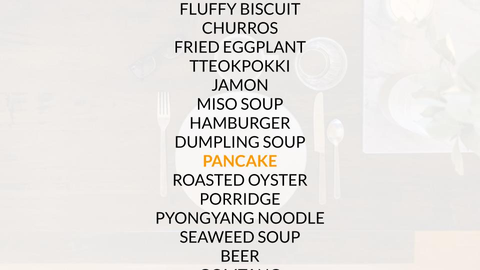
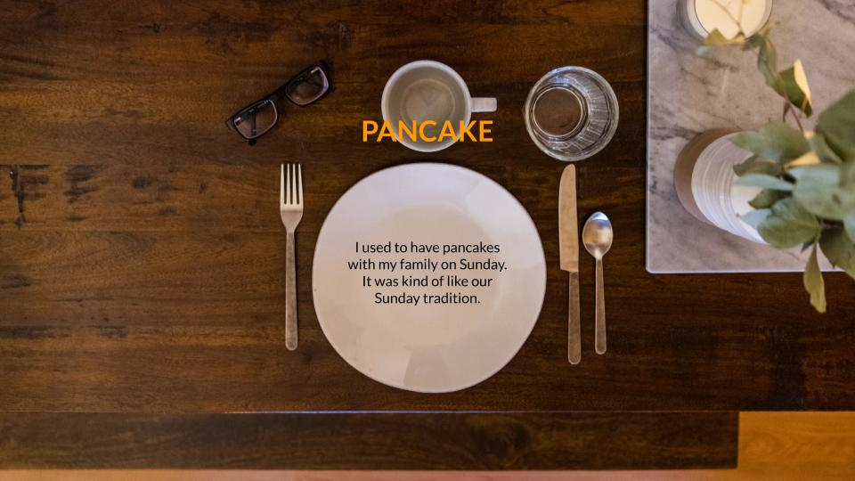

Project direction by professor: For this project, come up with a question you’d like to explore. Devise a plan to receive answers for the question and document the process. Possible ways of collecting information are, but aren’t limited to: interviewing people in the school or on the street; on Twitter; on Instagram; emailing a select audience, or posting a survey online. Aim to have as many answers as possible, but we’ll need at least 50 for the scope of the assignment. Once you have your answers, create a website to house this information.
1. Think about how you’ll present your findings. Are they organized, or disorganized?
2. Consider the hierarchy of your content – is the question and process important? How do they relate to your actual findings?
3. Consider how you’ll present your answers. With text? Images? Drawings? Photographs?
4. Consider how the user interacts with your archive, and how the archive is experienced. Is it immediately accessible in its entirety, or is the user required to discover it?
5. The project is required to have at least two views: a view at a glance, and a detailed view where you can explore specific entries and learn more information.
In order to collect 50 answers, started with the idea 'what makes people happy.'
HTML, CSS, jQuery, Drawing, Illustrator
5 weeks including getting feedbacks from professor, critique in class and spring break
(March 1st ~ April 5th, 2019)
1. Visual Presentation and Confirming the Concept
Here are 3 different directions of visual presentation -- 1: Flipping card, 2: Choosing ingredients, 3: Kitchen table. I shared thoughts on these versions with classmates to confirm. The first one is not easy to correlate the topic. The second one is focusing more on ingredients rather than the food itself. The third one got positive reactions since it gives viewers experience that the food is served right in front of them and they could feel like eating it.
2. Prototyping with Sketch
Based on feedbacks from classmates and professor, I made prototypes with Sketch. Below is the first prototype. While the navigation is easy for users to follow, it doesn't show 50 different foods at once in the main page. Also the background images are too stock-y and doesn't feel like they're 'designed.' It needed more clear art directions to create homey and cozy experience.
Below is the second prototype which I added icons. The icons appear with mouse click(I used count function in jQuery). Here's the feedback from professor: "The colors of icons look a bit off and the stroke weight is also different in each icons. Rather than having thenounproject icons, It’ll be better to draw them on your own to be cohesive. For now the interaction feels not interactive enough and just adding clicks is a bit boring. Placing images in a row doesn’t really add up that much and they take up spaces that are too small. You could make more experimental by using the whole screen and positioning the images in a different spots so that viewers could be more engaged in the interaction. I think it’s better to focus on laying out them, not executing the complicated codes."
3. Execution with HTML, CSS, jQuery
Therefore I went back to the design directions and changed the layout into a set of flash cards. I drew icons and embedded in flash cards with a coloring-effect. Icons are scanned and created with Illustrator.